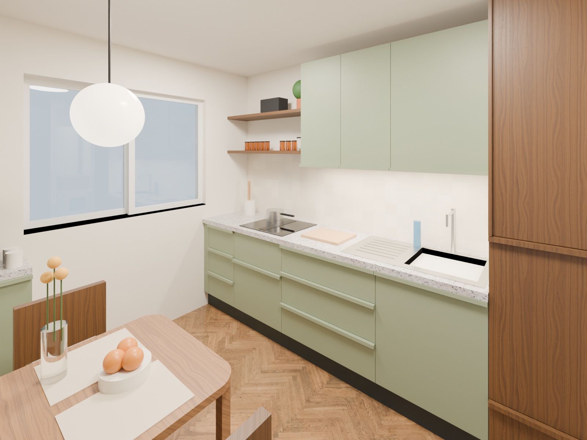
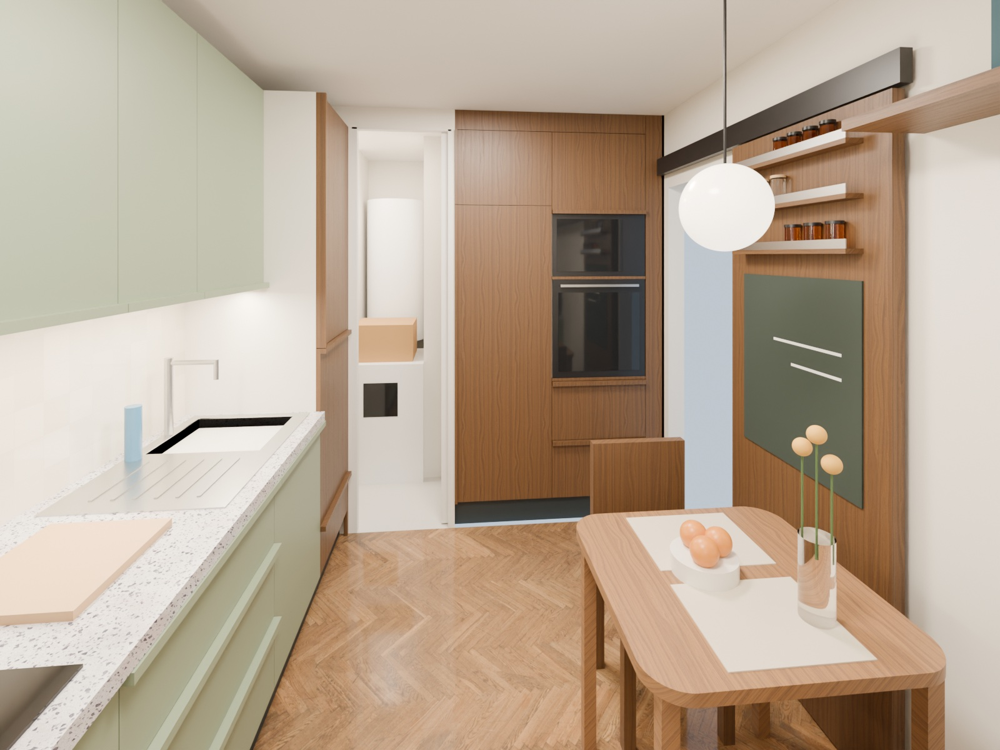
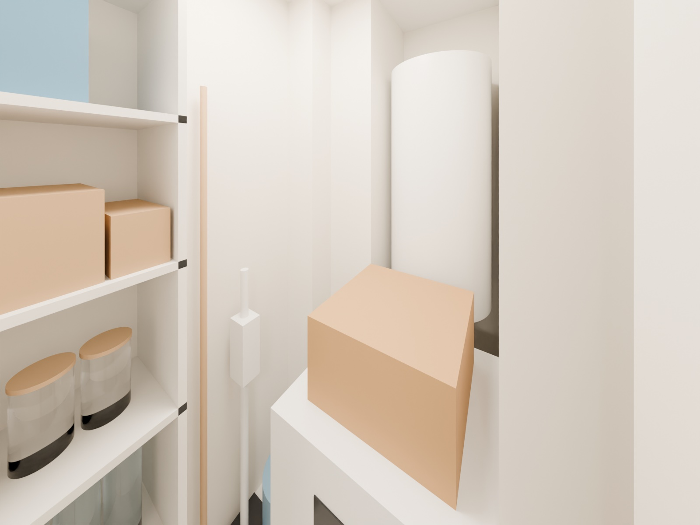
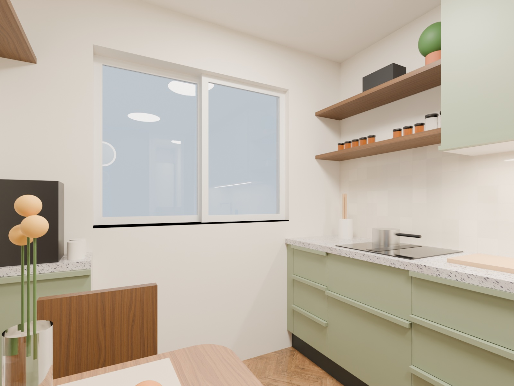
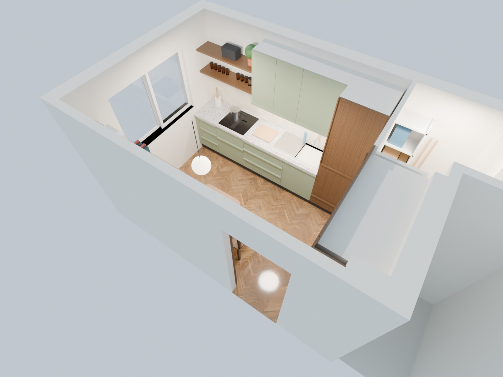

Variante A · V1.1 · FreeCAD + Blender
Rendus 3D cuisine
Modèle 3D construit dans FreeCAD à partir des cotes du plan et des coupes (variante A, table carrée 70 × 70), rendu dans Blender (Cycles). Meubles bas et hauts sauge, meubles toute hauteur en noyer, poignées profilées toute longueur dans la teinte de la façade, plan terrazzo gris clair, crédence zellige ivoire, parquet bâtons rompus.
Depuis l'entrée, vers le nord-ouest
Rangée nord sauge, étagères ouvertes, fenêtre coulissante, coin repas.

Depuis la fenêtre, vers l'est
Colonnes noyer : frigo, four et micro-ondes ; porte du cellier ouverte, porte d'entrée à étagères et ardoise.

Depuis le seuil du cellier
Étagères P30, râtelier à balais, lave-linge devant le ballon.

Assis à table
Sur la chaise côté four, regard vers la fenêtre et la rangée nord.

Vue plongeante
Plafond retiré : l'ensemble cuisine et cellier.

À savoir
- Teinte des meubles bas et hauts : sauge #8D9B80, celle des rendus Gemini.
- Vues prises à hauteur d'yeux d'une personne de 1,75 m : 1,63 m debout, 1,20 m assise ; la vue plongeante fait exception.
- Les cotes sont recopiées du plan à la main : une modification de cuisine-plan.html ne passe pas encore dans la 3D.
- Textures CC0 : noyer et parquet de Poly Haven, terrazzo d'ambientCG. La décoration est indicative.
- Scripts :
3d/cuisine_a.py(FreeCAD),3d/rendu.py(Blender),3d/textures.py; regénérer avecjust rendu-3d.
Changements
| Version | Date | Changements |
|---|---|---|
| V1.1 | 05/10/2026 | Meubles bas et hauts en sauge #8D9B80 (couleur des rendus Gemini) ; caméras à hauteur d'yeux (1,63 m debout) avec verticales droites ; nouvelle vue assise à table (1,20 m) ; vase et corbeille de fruits déplacés sur la table. |
| V1 | 05/10/2026 | Premiers rendus 3D de la variante A : 4 vues (entrée, fenêtre, cellier, plongée), avec et sans décoration. |